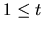
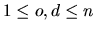
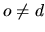
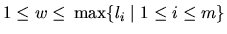

| Going in circles on Alpha Centauri |
In the early 27th century, Alpha Centauri has become the main shipping hub of this part of the galaxy. At a space station near the fourth planet, goods from almost every space-faring civilization are traded and shipped to all major star systems. The space station is shaped like a large circle, and has docking ports on its outer rim, labelled clockwise from 1 to n:
When a trading spaceship docks to a port, it usually makes a request to transfer its cargo to another ship docked to some other port. This task is taken care of by transportation robots (transrobs) operating within the ring of the space station. The transrobs can travel clockwise around the station, and load and unload cargo at the ports.
Every ships cargo fits into one transport container, and all transrobs can carry only one container at a time. The transrobs only differ in maximal weight they can carry.
The consortium operating the space station has recently decided to upgrade its transportation system. But before doing so, they want to gather some statistics on the performance of their current system. More specifically, they are interested in
For this, they need a simulation program, which you have to write. To facilitate this task, the consor- tium has released the following details on their transrob control program.
This is followed by one or more shipments to perform. Each shipment is described by a line containing four integers, t, o, d, w: the time t the request was made at (measured in minutes since the beginning of the simulation), the port number o where the shipment comes from (origin), the port number d of the shipment's destination, and the weight w of the container in galactic tons.
The request times are in strictly increasing order in the input file. The values satisfy , ,  and .
The description of shipments is terminated by the line ``-1 -1 -1 -1''.
The input is terminated by a test case starting with n = m = 0. This test
case should not be processed.
At the beginning of the simulation (time 0), all transrobs are idle, and located at port number 1.
All values must be exact to three digits to the right of the decimal point.
Output a blank line after each test case.
10 3 5 10 20 1 2 9 8 2 7 8 5 5 3 2 17 20 1 2 4 -1 -1 -1 -1 0 0
Simulation 1 Average wait time = 17.250 minutes Average utilization = 71.875 %